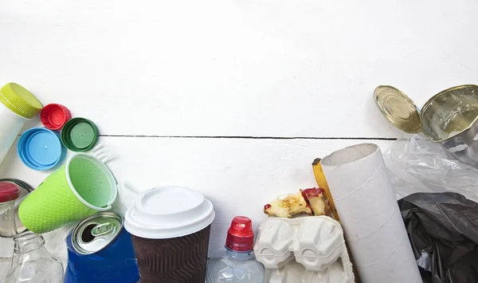
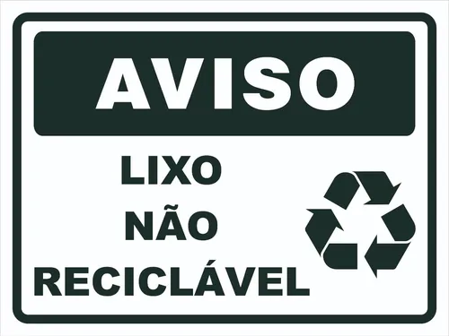
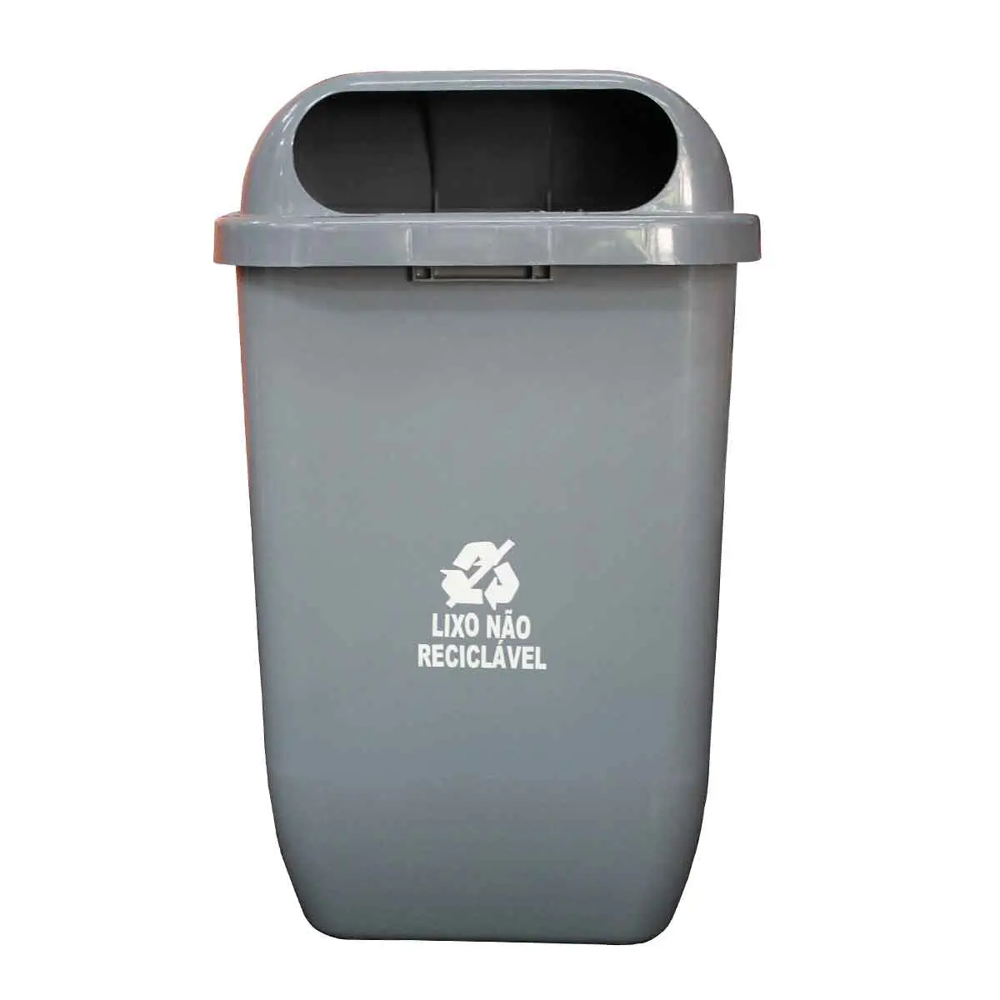

Resíduos Não Recicláveis
Alguns materiais não são recicláveis por causa de sua composição, contaminação ou falta de viabilidade econômica. Saber identificá-los ajuda a evitar a mistura com recicláveis.
Exemplos Comuns
- Papel higiênico e guardanapos usados
- Fraldas descartáveis
- Espelhos e vidros temperados
- Isopor sujo
- Embalagens metalizadas (como salgadinhos)
Por que não reciclar?
- Contaminação dificulta o reaproveitamento
- Materiais mistos são difíceis de separar
- Falta de tecnologia para reaproveitamento
- Baixo custo-benefício para reciclagem
Descarte Correto
- Use sacos bem fechados para evitar vazamentos
- Evite misturar com recicláveis
- Procure locais de descarte específico
- Informe-se com a prefeitura da sua cidade
Dicas Importantes

Separe o Lixo
Nunca misture resíduos recicláveis com materiais contaminados ou que não podem ser reciclados.

Identifique os Materiais
Sempre verifique as embalagens e sinalize o que não é reciclável para facilitar o trabalho de coleta.

Use Lixeiras Corretas
Os resíduos não recicláveis devem ir em lixeiras cinza ou preto, de acordo com a separação da sua cidade.
Impacto Ambiental
Os resíduos não recicláveis, quando descartados incorretamente, podem causar sérios danos ao meio ambiente e à saúde pública.
- Aumento da poluição do solo e da água
- Emissão de gases tóxicos em aterros sanitários
- Risco de contaminação para animais e humanos
- Contribuição para o entupimento de redes de esgoto e enchentes